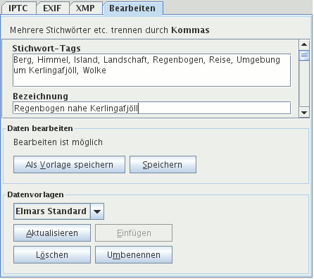

Über den Kartenreiter Bearbeiten können Sie die Metadaten eines oder mehrerer Bilder gleichzeitig bearbeiten, sofern Sie Schreibrechte besitzen im Bilder-Ordner und für existierende XMP-Dateien. Ohne Schreibrechte sind die Eingabefelder dunkler und es steht unter Daten bearbeiten, dass Bearbeiten nicht möglich ist.

Tipp: Klicken Sie nicht jedesmal auf die Schaltfläche Speichern sondern nuten das Tastaturkürzel Alt+S. So können Sie schneller eingeben.
Folgende Daten können mehrfach vorkommen:
Trennen Sie diese durch Kommas. Wollen Sie folgende drei Stichwörter zuordnen:
geben Sie ein: Himmel,Wiese,Blume. Sie können auch Leerzeichen nach den Kommas eintippen, diese werden nicht abgespeichert.
Wählen Sie ein Bild aus, werden seine Metadaten angezeigt. Sie können diese verändern und abspeichern, indem Sie auf die Schaltfläche Speichern klicken (Tastaturkürzel: Alt+S). Sie löschen Daten durch Entfernen aus den Eingabefeldern vor dem Abspeichern.
Wählen Sie mehrere Bilder aus, werden keine Metadaten angezeigt. Daten, die Sie eingeben werden in allen Bildern ersetzt, wenn sie nur einmal vorkommen, wie der Name des Fotografen, das Copyright, der Aufnahmeort. Eingaben in Felder mit sich wiederholenden Metadaten - Stichwörter und Kategorien - werden allen ausgewählten Bildern angehängt, sofern sie dort noch nicht existieren. Leer gelassene Felder werden nicht verändert. Die Daten werden in XMP-Filialdateien und die Datenbank gespeichert, nachdem Sie die Schaltfläche Speichern betätigen mit der Maus oder dem Tastaturkürzel Alt+S.
Vorlagen sind Metadaten, die Sie immer wieder benötigen. Einmal abgespeichert werden sie in die Bearbeiten-Felder eingefügt durch Klick auf die Schaltfläche Einfügen (Alt+E) im Panel Datenvorlagen. Der Name der aktuellen Vorlage wird angezeigt im Dropdown-Listenfeld im Panel Datenvorlagen.
Für eine Vorlage eignen sich besonders Copyright, Adresse des Fotografen und Stichwörter, die Sie immer wieder benutzen.
Sie können aus bestehenden Metadaten eine Vorlage erzeugen. Entfernen Sie vorher alles, was nicht in die Vorlage soll und klicken anschließend auf die Schaltfläche Als Vorlage speichern (Alt+V).
Die Bedeutung der anderen Schaltflächen unter Datenvorlagen:
(Alt+A)(Alt+E)(Alt+Ö)Alt+MBenutzen Sie Datenvorlagen.
Haben Sie viele Bilder fotografiert, wählen Sie vorher alle aus, die die gleichen Stichwörter, Kategorien etc. erhalten sollen. Dann geben Sie die Stichwörter und Kategorien ein und speichern diese ab. Das wiederholen Sie für andere Stichwörter und Kategorien.